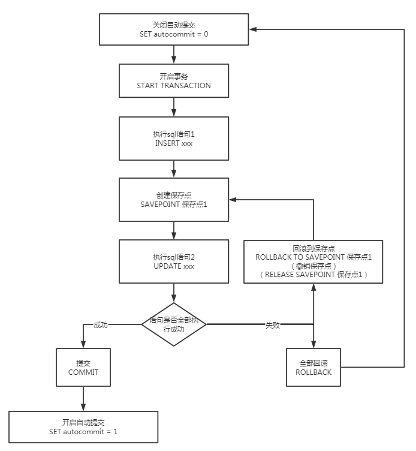

事务
什么是事务
要么都成功，要么都失败
事务四个特性ACID
- Atomicity原子性
- Consistency一致性
- Isolation隔离性
- Durability持久性
一、原子性（atomicity)
一个事务要么全部提交成功，要么全部失败回滚，不能只执行其中的一部分操作
二、一致性（consistency)
最终一致性：A有800，B有200，A要给B转200，二者无论怎么转总钱数都为1000
事务的执行使得数据库从一种正确状态转换成另外一种正确状态
事务的执行不能破坏数据库数据的完整性和一致性，一个事务在执行之前和执行之后，数据库都必须处于一致性状态。
如果数据库系统在运行过程中发生故障，有些事务尚未完成就被迫中断，这些未完成的事务对数据库所作的修改有一部分已写入物理数据库，这是数据库就处于一种不正确的状态，也就是不一致的状态
三、隔离性（isolation）
在事务正确提交之前，不允许把事务对该数据的改变提供给任何其他事务，即在事务正确提交之前，它可能的结果不应该显示给其他事务
事务的隔离性是指在并发环境中，并发的事务是相互隔离的，一个事务的执行不能不被其他事务干扰。不同的事务并发操作相同的数据时，每个事务都有各自完成的数据空间，即一个事务内部的操作及使用的数据对其他并发事务是隔离的，并发执行的各个事务之间不能相互干扰。
四、持久性（durability）
事务没有提交：若事务没有提交，则数据库恢复到原状
事务已经提交：若事务已经提交，则数据持久化到数据库
事务一旦提交就不可逆
一旦事务提交，那么它对数据库中的对应数据的状态的变更就会永久保存到数据库中。–即使发生系统崩溃或机器宕机等故障，只要数据库能够重新启动，那么一定能够将其恢复到事务成功结束的状态
事务隔离级别
ISOLATIONREADUNCOMMITTED：未提交读，最低隔离级别、事务未提交前，就可被其他事务读取（会出现幻读、脏读、不可重复读）；
ISOLATIONREADCOMMITTED：提交读，一个事务提交后才能被其他事务读取到（会造成幻读、不可重复读），SQL server 的默认级别；
ISOLATIONREPEATABLEREAD：可重复读，保证多次读取同一个数据时，其值都和事务开始时候的内容是一致，禁止读取到别的事务未提交的数据（会造成幻读），MySQL 的默认级别； ISOLATION_SERIALIZABLE：序列化，代价最高最可靠的隔离级别，该隔离级别能防止脏读、不可重复读、幻读。
脏读 ：表示一个事务能够读取另一个事务中还未提交的数据。比如，某个事务尝试插入记录 A，此时该事务还未提交，然后另一个事务读取到了记录 A。
不可重复读（数据内容不同） ：是指在一个事务内，多次读同一数据，读出来的数据不一致。事务A读取余额，读到5元，此时事务B开启事务将余额改为0提交，事务A再次读取，读到余额0元。
幻读（数据条数不同） ：指同一个事务内多次查询返回的结果集不一样。比如同一个事务 A 第一次查询时候有 n 条记录，但是第二次同等条件下查询却有 n+1 条记录，这就好像产生了幻觉。发生幻读的原因也是另外一个事务新增或者删除或者修改了第一个事务结果集里面的数据，同一个记录的数据内容被修改了，所有数据行的记录就变多或者变少了。
事务使用
mysql是默认开启事务自动提交的
set autocommit = 0 /* 关闭 */
set autocommit = 1 /* 开启（默认） */
各种命令
1 | -- 关闭mysql中的自动提交 |

转账实例
1 | -- 创建表 |